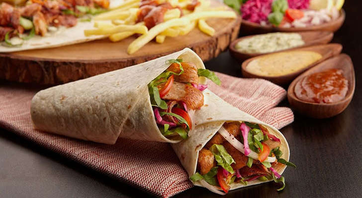
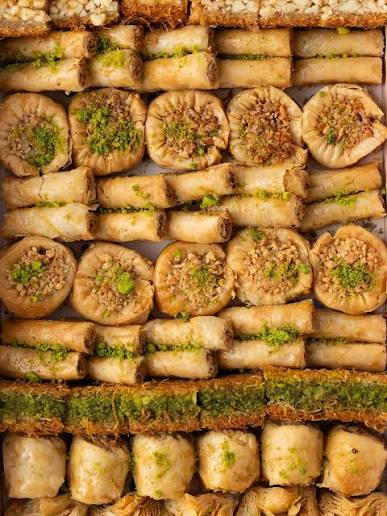
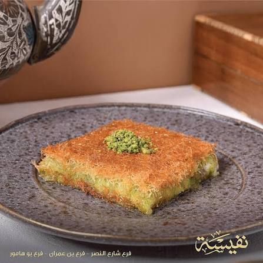

اشهر الاكلات التركية
 هو أحد أشهر الأطباق التقليدية في تركيا، ويعود أصله إلى فترة الدولة العثمانية في القرن التاسع عشر (تحديداً في مدينة بورصة على يد إسكندر أفندي أو حمدي أستا حوالي عام 1830). وتُعتبر الأم الروحية للشاورما الشامية والجيروس اليوناني. |

أشهر وأفخر أطباق الدونر في المطبخ التركي. ابتكره الطاهي إسكندر أفندي في مدينة بورصة التركية عام 1867م. وتحتفظ عائلة "إسكندر أوغلو" بالعلامة التجارية الأصلية لهذا الطبق في تركيا حتى اليوم. |
|---|---|
 شهر حلوى تقليدية في المطبخ التركي والعالمي، تعود جذورها المتطورة إلى مطابخ قصر طوب كابي في إسطنبول خلال العهد العثماني. وتُعد مدينة غازي عنتاب جنوب تركيا العاصمة الرسمية للبقلاوة، حيث حصلت "بقلاوة عنتاب" على اعتراف جغرافي دولي بفضل جودة فستقها وطريقة صنعها المتقنة |
 حلوى شرقية دافئة ومقرمشة تُعد من أشهر الحلويات في تركيا، وتشتهر بها تحديداً مدينة أنطاكيا في محافظة هاتاي جنوب البلاد حيث حصلت على شهادة منشأ محلية. وتتميز عن الكنافة العربية بطريقة طهيها وتقديمها الفردي الساخن. |
حقوق الموقع محفوظة ©